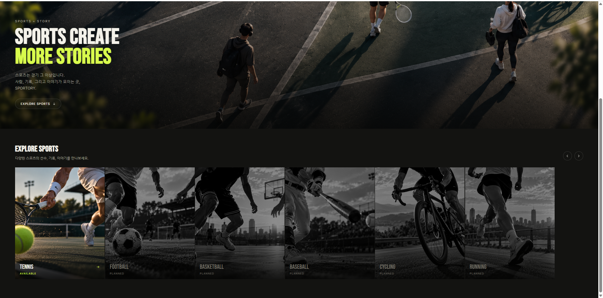
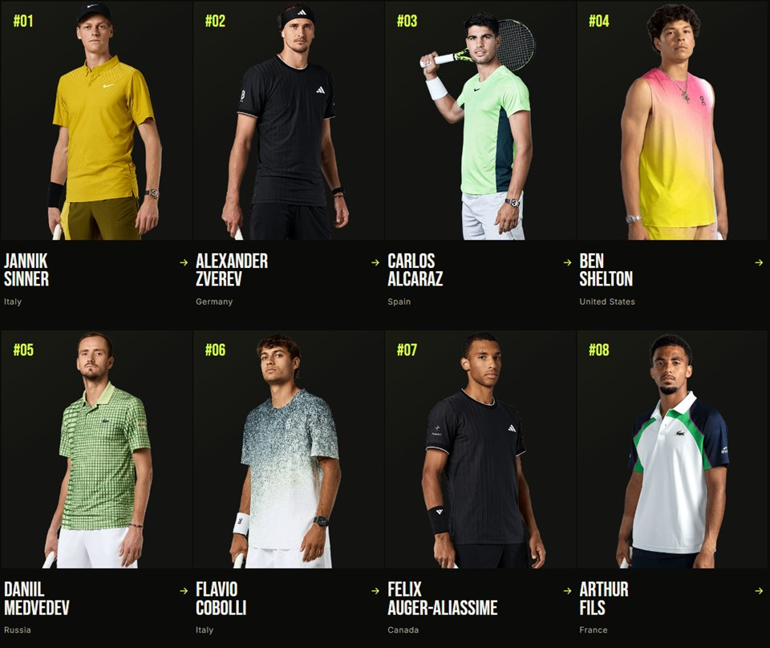
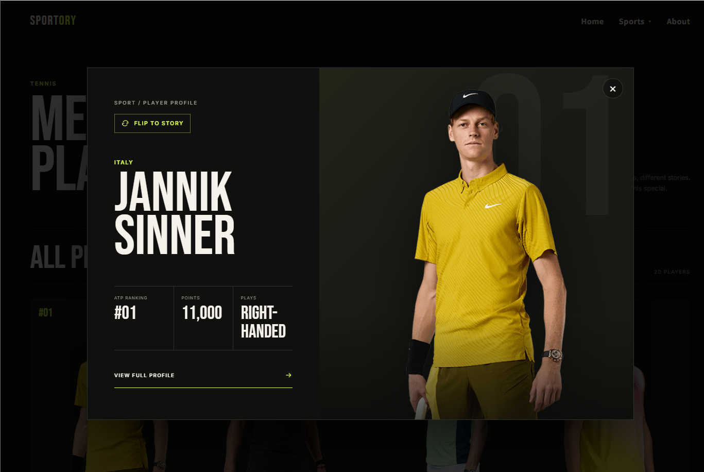
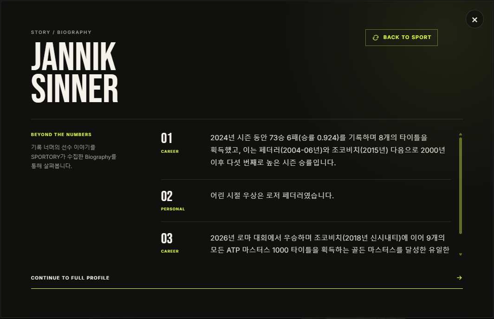
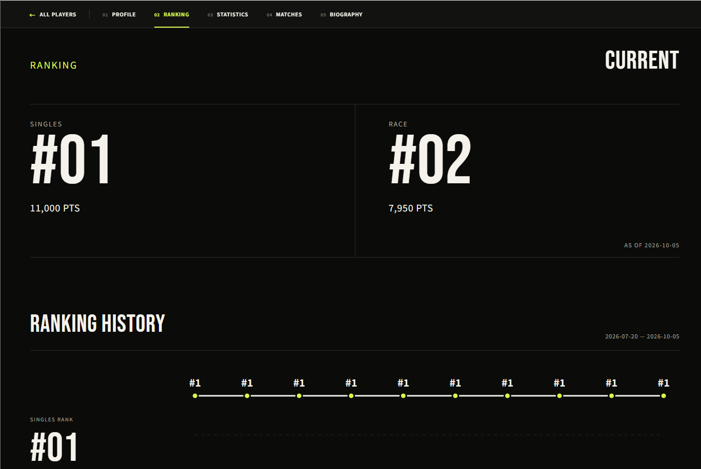

선수 · 순위 · 경기
통계 · Bio · 이미지
브라우저 실행
JSON · HTML · PNG
Raw 보존 · 정제
Bio 영문 → 한글
PostgreSQL
Storage (이미지)
DB 조회
→ JSON 응답
선수 목록
카드 · 상세
Windows
주 2회 · 월 1회
ATP 웹사이트
JSON · HTML
수집 원본
+ 수집 정보
정제 · UPSERT
Bio 변경 시 번역
선수 목록
카드 · 상세 화면
API 요청
응답 데이터 표시
DB 조회
JSON 응답 반환
선수 이미지
ATP 페이지 접근 차단
ATP 선수 페이지 접근
Network Response 확인
기록 · 이미지 → 응답 수집
Biography → HTML 추출
수집 응답 원본 그대로
출처 · URL · 선수 ID
수집 시각 · 수집 방식
생년월일 시각 제거
중첩 객체 → 단일 값
INSERT ... ON CONFLICT
재수집 시 최신 값 갱신
players · player_stats
player_ranking_history
matches · player_bios
월 1회 수집
Personal · Career
내용 변경 여부 확인
불필요한 반복 번역 방지
Personal · Career
섹션 단위 일괄 번역
JSON 응답 스키마 지정
원문 ↔ 번역 재연결
개수 일치 · 누락 확인
player_bios 저장
데이터별 주기에 맞춰
스크립트 자동 실행
자주 바뀌는 기록
거의 바뀌지 않는 정보
수집 → Raw 저장 → 정제 저장
Bio 변경 시 Gemini 번역
Stats Response 수집 실패
스케줄러 코드 상시 실행 필요
정해진 주기에만
수집 스크립트 실행
GET /players
GET /players/{id}/rankings?limit=1
→ 선수마다 반복 호출
GET /players
→ 최신 ranking · points 함께 반환
→ 선수별 추가 호출 제거




